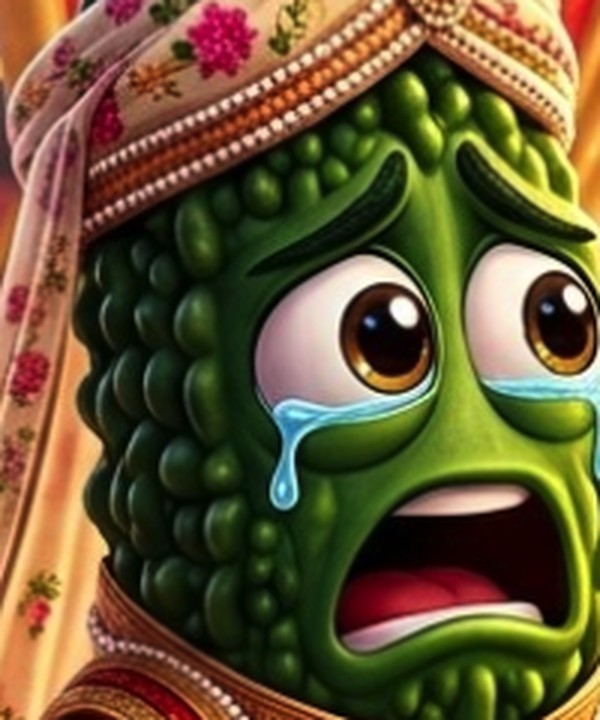
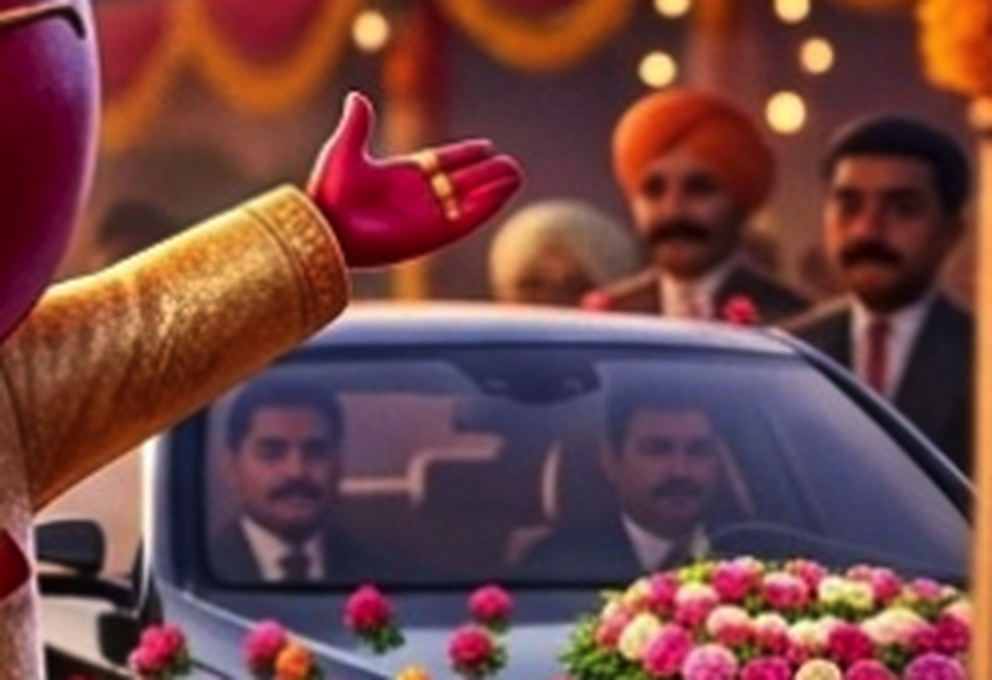
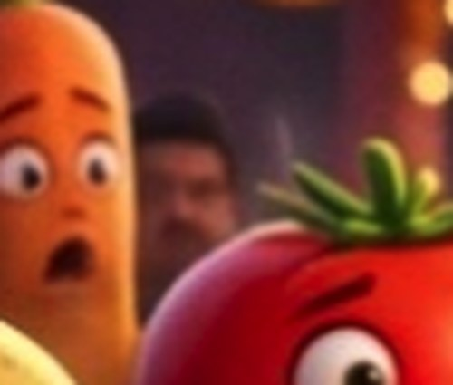
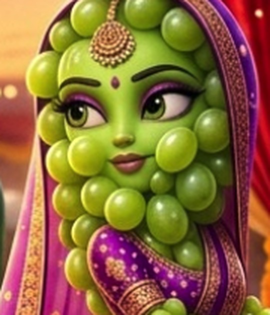
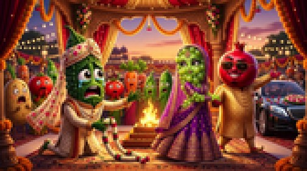
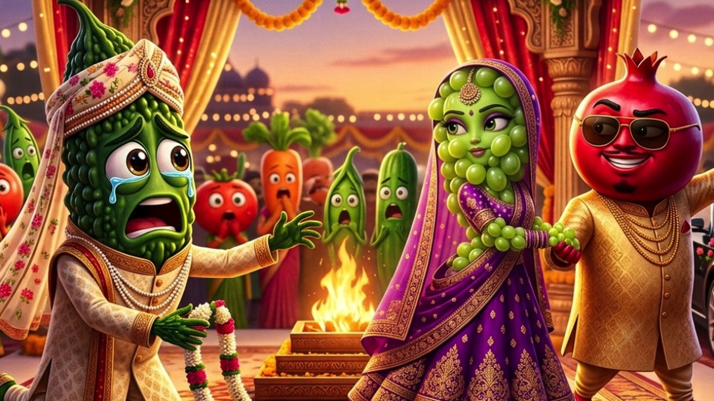

← Veg-Toon Studio / Thumbnail Review · Story 1
🔍 Story 1 · “गरीब करेला vs रसीली अंगूर” · this is Video 2The concept and the composition are right. The craft has one real problem: Veo 3 ignored the render lock and put six human faces into an all-vegetable world, and it drew the bride as a green-skinned woman rather than a grape. Below: exactly where, why it happened, a reframe that fixes it in seconds, and the corrected prompt.
Canon check passed: कल्लू करेला the groom, रसीली अंगूर the bride, सेठ अनार the rich pomegranate — all three match the Story 1 script, and Anaar's sunglasses, gold sherwani and luxury car read as “rich” instantly. Zero text baked into the image, exactly as the rule demands.

Karela, 1:1 detail. Perfectly on-model — cartoon eyes, no human features. This is the bar for every other character.
Zones 1 and 2 are humans. Zone 3 is the bride's face.
Your prompt explicitly said “NO real human face, skin, hair or hands anywhere”. Veo 3 ignored it in three places — and it ignored it precisely where the prompt gave it a human-shaped excuse.

Zone 2, the crowd: a turbaned man with a moustache, a white-haired guest, and a man in a suit and tie. Plus two more men sitting inside the car, visible through the windshield.

Zone 1: a sixth human — dark hair, moustache — tucked between the carrot and the tomato.
Why it happened: the prompt said “a shiny luxury car parked at the edge”. Every photo Veo 3 has ever seen of a wedding car has people in it, so it filled the windows. Same with “wedding guests” — the model's prior for a mandap crowd is human. A negative instruction at the end of a long prompt loses to a strong visual prior stated positively in the middle of it. The fix is to make the car explicitly empty and the crowd explicitly vegetable, in the same breath as you introduce them.
Look at रसीली अंगूर beside कल्लू करेला. He has a vegetable body with big cartoon eyes. She has a human woman's face — human nose, human cheekbones, arched human eyebrows, eyelashes, lipsticked human lips — tinted green, with grapes arranged around it like hair. She's a person in a grape costume.
Why it happened: the prompt described her only as “a glamorous purple-green grape in a rich purple-and-gold bridal lehenga”. “Glamorous” plus “bridal” is an overwhelmingly human prior, and nothing in the line told Veo 3 what her face was made of. Karela got a full physical description; she didn't. The model filled the gap with a Bollywood bride.
This one matters more than the humans, because at thumbnail size her face is large and central — you can't crop it away, and it's the flaw a viewer actually registers.

Human nose, human lips, human brows. Compare with Karela above.
Our older prompts always ended with “reserve clean empty negative space along the TOP edge for a short 3–5 word Hindi overlay”. The Playbook 2.0 scene prompt dropped that line, and it shows: every band of this frame is busy. I measured edge-density across the image — the calmest zones are the two top corners, and the busiest is the bottom strip, which is exactly where you'd instinctively put the text. Put the overlay top-left, or restore the negative-space line to the prompt.
The file you sent is 1398×779, which is 1.795:1. True 16:9 is 1.778:1. If that's the real render and not an artefact of the screenshot, YouTube will shave a sliver off. Always upload exactly 1280×720 or 1920×1080. The reframe below is already exact.
This is the real size of a thumbnail in the YouTube sidebar and mobile grid. Shown at true scale, then blown up so you can see what survives.

As rendered. The story still reads — that's a real achievement. But the tears, the whole emotional payload, have almost vanished, and the middle is a mush of crowd, fire and fairy lights competing with the leads.
Reframed. Faces roughly 40% bigger. The tears read. Anaar's smug grin reads. Same image, better crop.
Video 2 publishes at 5:30 PM. You do not have time to re-render, and you don't need to. Cropping to the three leads throws away every human in the frame at once.

Crop box x 210 → 1190, y 120 → 671 on the file you sent, exported at 1280×720. Zero humans, exact 16:9, faces significantly larger. The luxury car is trimmed to a glint at the right edge — Anaar's gold sherwani and sunglasses carry the “rich” signal on their own.
Three changes from the version you used: the car is explicitly empty, the crowd is explicitly vegetable with no humans, and रसीली अंगूर gets a full face description so Veo 3 has no gap to fill with a human. The negative-space line is restored, and the render lock is stated before the scene rather than after it, where it kept losing.
RENDER LOCK, obey before everything else: this is an all-vegetable cartoon world. EVERY living thing in this image is an anthropomorphic Pixar-style vegetable or fruit with cartoon eyes and tiny stubby cartoon limbs. There are NO humans anywhere — no human face, no human skin, no human hair, no human hands, nobody inside any vehicle, nobody in the crowd. Absolutely NO text, letters, numbers, captions, subtitles, watermarks or logos anywhere in the image. Cinematic 3D Pixar-style animated thumbnail still, 16:9 (1280x720), ultra-high-CTR Indian "sabji cartoon" story-scene that reads instantly at 120px. A STAGED DRAMATIC WEDDING BEAT, not a portrait. SETTING: a decorated Indian wedding mandap at golden dusk — marigold garlands, red-and-gold drapes, sacred fire, softly blurred fairy lights. At the right edge, a shiny black luxury car, COMPLETELY EMPTY, with dark tinted windows and no driver and no passengers, nobody visible through any window. LEFT, the victim: KARELA the groom — a dark-green bumpy ridged bitter-gourd with a tapered body, huge glossy tear-filled cartoon eyes, mouth open in heartbreak, a cream-and-gold sherwani, a flower-veil sehra slipping off his head, one stubby cartoon hand reaching out as his wedding garland slips from his fingers. RIGHT, the betrayers: RASILI the bride — she is a CLUSTER OF GLOSSY PALE-GREEN GRAPES, not a woman. Her head is a round bunch of grapes; her face has BIG ROUND CARTOON EYES with no human nose, no human lips, no lipstick, no human eyebrows, no eyelashes, no human cheekbones — a simple curved cartoon mouth and a small cartoon nub of a nose, exactly the same cartoon face style as Karela. Her body is a grape cluster with tiny stubby cartoon arms. She wears a rich purple-and-gold bridal lehenga, chin lifted, turning away from Karela toward SHETH ANAAR — a fat glossy red pomegranate with a waxy facetted shell and a golden crown-like calyx, flashy golden sherwani, gold chains and sunglasses, smirking, pulling the grape bride to his side. IN THE BACKGROUND, softly blurred: a small crowd of shocked WEDDING-GUEST VEGETABLES ONLY — a potato, a tomato, a carrot, a pea pod — each an anthropomorphic cartoon vegetable with cartoon eyes and stubby cartoon hands over their mouths, gasping. No human guests. No human silhouettes. Strong warm rim-light, high saturation, dramatic Bollywood-poster lighting, sharp focus on the three lead faces, the three leads large in frame, clear tonal split between the heartbroken green groom and the rich red-purple couple. Reserve clean, calm, uncluttered negative space across the TOP-LEFT of the frame for a short 3-5 word Hindi text overlay that will be added later in post — keep that area free of faces, props and busy detail.